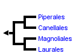
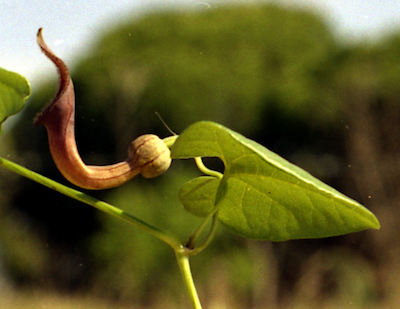
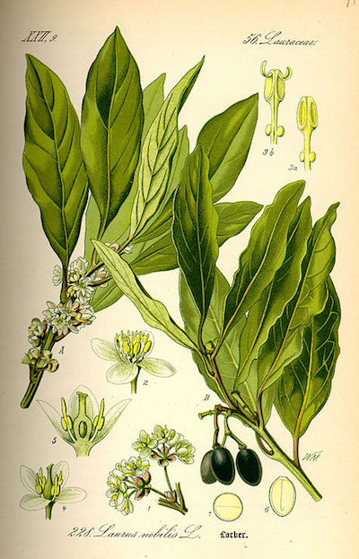
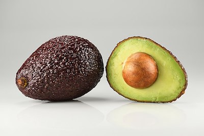

- Usamos aquí el término
"magnólidas" como grupo sin categoría (magnoliid,
en inglés) para un importante conjunto formado
por unas 8.500 especies agrupadas en 20
familias, alguna de ellas de interés
económico.
|
- Son plantas principalmente leñosas:
grandes árboles, arbustos, lianas y
ocasionalmente hierbas y se distribuyen por
todas las zonas cálidas y templadas del mundo.
|
- Con frecuencia sus flores son hermafroditas,
acíclicas y polímeras, con perianto
homómero. Fueron consideradas por muchos
autores como el arquetipo de angiospermas
primitivas hasta que se perfeccionaron los
estudios filogenéticos.
|
- Incluye importantes frutos
tropicales, como el aguacate y la
chirimolla, y especias importantes,
como la pimienta, la canela, el laurel, el
alcanfor, nuez moscada y otras especias usadas
en Asia.
|
- También incluye impotantes especies
ornamentales, como los magnolios, etc.
|
- Or. Piperales: incluye unas
4.500 spp. y 4 familias, dos de ellas
importantes:
- Piperaceae, con flores
aclamídeas; incluye el árbol de la pimienta
Piper nigrum.
- Aristolochiaceae,
incluye hierbas perennes, algunas
trepadoras, con flores zigomorfas muy
modificadas. Hay 6 especies del género Aristolochia
en la flora ibérica.
|
- Or. Magnoliales: incluye
unas 3.300 spp. y 6 familias, principalmente
árboles de zonas cálidas o templadas, con
flores generalmente hermafroditas y vistosas.
Géneros o especies de interés
- Los magnolios (Magnolia
spp.)
- El árboles de los tulipanes (Liriodendron
spp.)
- El chirimoyo (Annona
cherimola)
- Árbol
de la nuez moscada (Myristica frangans)
|
- Or.
Laurales: unas 3.700 spp. en 7
familias de plantas leñosas con aceites
aromáticos en las hojas. La más importante,
Lauraceae, con fósiles del Cretácico
Inferior; géneros y especies de interés (las
3 lauráceas):
|
- Laureles, Laurus
nobilis (mediterránea), L.
novocanariensis (laurel canario) y más
de 300 especies más. Da su nombre a la laurisilva,
bosque siempre verde reliquia de la
vegetación mediterránea de la era Terciaria.
- Árbol de la canela y alcanforero
(Cinnamomon spp.)
- Aguacate (Persea
americana); el fruto parece una drupa,
pero el "hueso" es una semilla y por tanto
se trata de una baya.
|
|

Filogenia
del clado magnólidas según TOL (2)

Flor y
hoja de Aristolochia baetica.
Foto: J. León, Hinojos.

Lámina
de Laurus nobilis, de Otto Wilhelm
Thomé - Flora von Deutschland, Österreich
und der Schweiz - www.biolib.de,
Dominio público,
https://commons.wikimedia.org

Aguacate
(Persea americana, laurácea).
De Ivar Leidus - Trabajo propio,
CC BY-SA 4.0,
https://commons.wikimedia.org
|